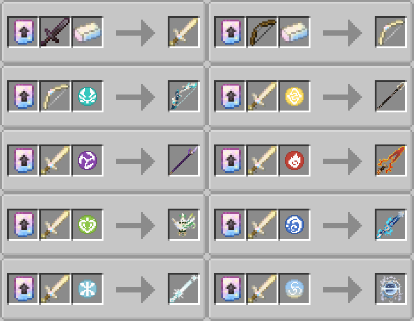
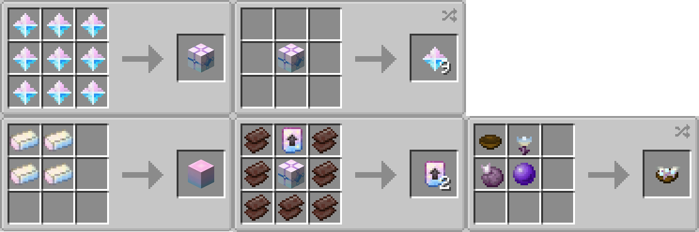

GILE DOCUMENTATION
Versions History
A changelog and archive of all official GILE releases.
A Note on NeoForge: GILE is fundamentally built for Fabric. Any official NeoForge versions are strictly Works in Progress (WIP). However, there is a community-made, unofficial beta port available for NeoForge. Massive credits to furorianXei for making it happen!
Check out the unofficial NeoForge port here. ↗
Check out the unofficial NeoForge port here. ↗
1.0.0 (Release)
Minecraft Version: 26.1
Fabric Loader: 0.19.3+ | Fabric API: 0.145.1+26.1
- Official stable release.
- Everything you see on this wiki is about this version.
0.1.5 (Beta)
Minecraft Version: 1.21.1
Fabric Loader: 0.19.2+ | Fabric API: 0.116.11+1.21.1
- Initial Beta phase.
- Core wishing mechanics and basic elemental weapon functionality introduced.
- Overall: Old code on Yarn mappings with alot less features and improvements. Worse thinked Advancement progression.
- Getting Started: Pearlescent Brick blocks set is not there, only the full block itself. Wish crafted from 9 primogems, with no Pearlescent Material.
- The Moon: No Enderite and Glowing Chorus, but overall worldgen pretty much the same.
- Ghostly Thickets: Ghosts' babies have parents' models. Gloomy Flower texture was changed.
- Moon Desert: Only Glowing Chorus did not exist. Some Moon Sandstone recipes are missing.
- Tools & Utilities: Warp (Shadow) Clock saved only the first line of the sign as warp name. Heart of Emergency is called Heart of Healing, appears in End Cities. Jelly on a stick has different durability decreasing. No enchantments existed. Grappling Hook did not use custom particles.
- Elemental Weapons: Don't have any ability and can be crafted not by Wishing Mechanic, but in a Smithing Table.
- Ancient Ruins, End Threshold, Wishing Mechanic, Legendary Weapons: did not exist yet. You can get Elemental Weapons back then just by putting vanilla Netherite Sword or Bow in Smithing Table with a corresponding Sigil and a Fate Update Smithing Template.
- Known Issues: Jerboa can spawn infinitely, End Cities loot tables are broken, zoom is not working on bows, durability enchantments are not appliable on bows, some other enchantments are not appliable where should've, Hanging Sign show on screen a wrong GUI, Nocturne's Curtain Call can cause endless effect if dissapeared from the inventory too fast, map colors of most of the modded blocks are not as intented, Weasel Thiefs spawn is cursed, Elemental Weapons don't have abilities, Grappling Hook is glitched.
Beta Recipes:
- Most importantly - without Wishing Mechanic, the only way to make Elemental Weapons was to smith them with the ones from the Fate Collection. It implies that fate weapons' recipes were also existing, see right below:
- There existed a duplication recipe for the Fate Upgrade Smithing Template, but I've found it too expensive and useless.
- Wish was crafted without Pearleascent Material in beta, so directly from primogems, too cheap.
- Offering to the Moon Goddess is crafted from normal Chorus Fruit, unjustifiably cheap and Glowing Chorus is more valuable that way.

Beta Smithing Recipes
Beta Crafting RecipesFuture Ideas
Full list of ideas got in my head that can be added in the future GILE versions:- Worldgen:
- Nerf Ancient Ruins rooms' loot tables.
- Ancient Ruins' loot tables should include enchanted books?
- Different Ancient Ruins looks for dif biomes with dif rooms chances.
- Giant tree variant implementation.
- Weasels drop Mora/bundles with mora?
- Entities:
- Ruin Guardian spawning via nearly trial spawner logic.
- Frogs to be able to eat Void Slimes giving ...
- Ghostly bubbles particle to appear from Hovering Ghost?
- Gloomy Lynx animation like sculk.
- Moon torches scare Gloomy Lynx.
- Bane of Arthropods should work against moth?
- Ender Fly Sting rendering on player model.
- Blocks:
- Moon Fire spread logic.
- Add Glowing Chorus Plant in the Creative Tab.
- Void Slimeblock (maybe no collision).
- Be able to rotate rendering sigil on wish table.
- Modify leaves particles color.
- Items & Tools:
- Inverted Oak boat?
- In-game guide book.
- Music discs - nyan cat?, other...
- Animate some other items, the coolest ones.
- Chrono Gears should be able to be used from bundles/ender chests?
- Custom banner pattern, decorative pot sherd.
- Make another way to get enchanted books.
- Make Hearts of Emergency generate in End Cities chests?
- Nuclear Beam Renderer even more straight. Nerf the cannon?
- Make end compass animate if it works in this dimension.
- Weapons:
- Element and Aspect reactions.
- Animate Elemental/Legendary/Primordial weapons.
- Engulfing Lightning activates redstone you stand on.
- Raiden Thunder should work only in the overworld?
- Restriction either none, either for every Element or/and Aspect.
- Elemental Weapon Upgrading system to matter for attack speed and abilities' cooldowns/duration.
- Rethink cooldowns depending on ability.
- Legendary utility to give separate cooldown messages.
- Player model layer for legendary and Phanes.
- Misc:
- Moon phases retexturing (for Lunar Favor mode?).
- Entities animation, overall sounds improvement.
- Biomes-specific custom ambient sounds.
- Nyan cat song to redo with note blocks.
- Even more to come...